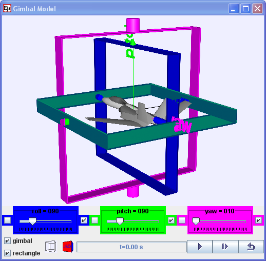

3D rotational Model of an object (aeroplane in Java 3D) rotated
with roll, pitch yaw.
3 Dimensional Rotational Model
Flight dynamics is the science of air vehicle orientation and control
in three dimensions. The three critical flight dynamics parameters are
the angles of rotation in three dimensions about the vehicle's center
of mass, known as pitch, roll and yaw.
Description:
The 3 Dimensional Rotational Model is a setup that resembles an actual
real life demonstration set using to illustrate and allow exploration
of the meaning of pitch, roll and yaw. There are 2 possible frames to
choose from cylinder rings or rectangles.
The independent axes when selected allows independent axes to be
rotated without affecting the others 2 axes, while when independent is
not selected allows a couple rotational model that could be used to
explore the concept of gimbal lock.
In simple Java, the is no object rendered in the model, just the frames
to explore pitch, roll and yaw.
In Java 3D, a aeroplane (in wrl) is rendered inside the model for
better association to aeroplane pitch, roll and yaw angles in 3D.
Exercises:
Engage:
Have you wondered how do airplane pliots communicate to each other
about the angles that the airplane makes with a defined equilibrium
state?
Do you know that what you learn here can be applied to boat and ships
angles too?
Set the sliders to roll = 90 , pitch 90 and yaw = 0 degree.
explore the roll slider and verify whether the following statement is
appriopriate.
"The equilibrium roll angle is known as wings level or zero bank angle"
Discuss and suggest a value of roll for this zero bank angle to occur.
hint: roll = 90 degree
Similarly, explore the sliders pitch and yaw and visit http://en.wikipedia.org/wiki/Flight_dynamics_(aircraft)
and other websites related to draw sketches and describe in sentence(s)
the meaning of
i) roll
ii) pitch
iii) yaw
hint:
According to http://en.wikipedia.org/wiki/Gimbal_lock
Gimbal lock is the loss of one degree of freedom in a three-dimensional
space that occurs when the axes of two of the three gimbals are driven
into a parallel configuration, "locking" the system into rotation in a
degenerate two-dimensional space.
Explore the model and discuss with your classmates what this means?
Advanced Learner:
Please submit your remix model that model features that are not
available in the existing virtual lab and share your model with the
world through NTNUJAVA Virtual Physics Laboratory http://www.phy.ntnu.edu.tw/ntnujava/index.php?board=28.0.
Impacting
the
world with your model now.
Credits:
The 3D rotational Model was created by Fu-Kwun
Hwang (original model found here http://www.phy.ntnu.edu.tw/ntnujava/index.php?topic=2084.0)
,
customized
by Loo
Kang
WEE (newer model found here http://www.phy.ntnu.edu.tw/ntnujava/index.php?topic=2237.0)
using
the
Easy Java Simulations (EJS) version 4.3.3.3 authoring and
modeling tool. An applet version of this model is available on
the NTNU website < http://www.phy.ntnu.edu.tw/ntnujava/
>.
You can examine and modify this compiled EJS model if you run the
model (double click on the model's jar file), right-click within a
plot, and select "Open EJS Model" from the pop-up menu. You must,
of course, have EJS installed on your computer. Information about
EJS is available at: <http://www.um.es/fem/Ejs/>
and
in
the OSP comPADRE collection <http://www.compadre.org/OSP/>.